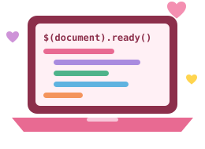

Assignment 6. jQuery
Student: Ashkarbekova Parasat
Group: SE-2529
Learning selectors, effects and animations with jQuery.

Task 0. Setup
jQuery is added from a CDN. Open the console to see the message.
jQuery is not ready.
Student: Ashkarbekova Parasat
Group: SE-2529
Learning selectors, effects and animations with jQuery.

jQuery is added from a CDN. Open the console to see the message.
jQuery is not ready.